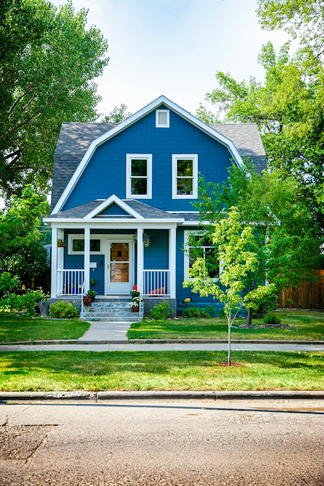

Mi encabezado
Presentación
Hola! Mi nombre es Melina Borroni, tengo 25 años, soy de la provincia de
Cordoba

Mi lista
- Puerta
- Ventana
- Cerradura
- Picaporte
- Techo
Como preparar un mate
- Calentar el agua
- Poner yerba en el mate
- Introducir bombilla
- Verter el agua caliente
- Agregar endulzante segun preferencia